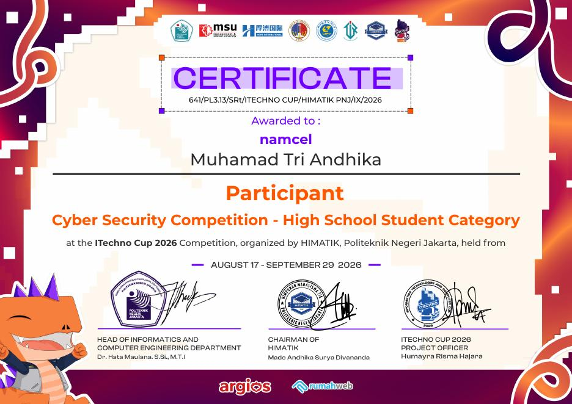
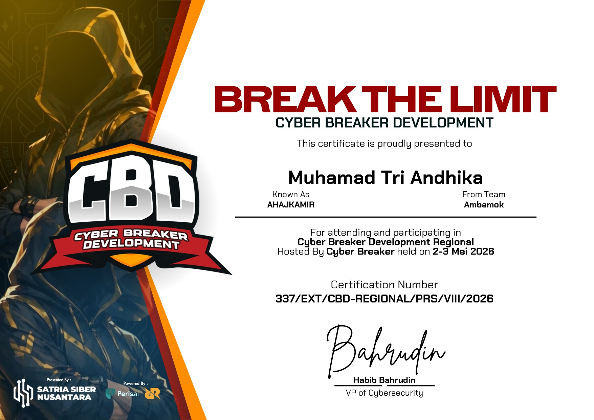

guest@security:~$ AHAJKAMIR
Ethical Hacker | Penetration Tester | Network Security Enthusiast
▼guest@security:~$ cat about.md
Saya adalah siswa SMK Negeri 69 Jakarta jurusan SIJA yang tertarik pada Ethical Hacking, Penetration Testing, Network Security, dan Digital Forensics.
Saya senang mempelajari cara kerja sistem dari sisi penyerang untuk membantu membangun pertahanan yang lebih kuat — mulai dari eksplorasi kerentanan web, konfigurasi jaringan, sampai analisis log dan traffic.
guest@security:~$ cat experience.log
Praktik konfigurasi jaringan dengan Cisco Packet Tracer dan MikroTik Winbox: IP addressing, subnetting, VLAN, trunking, inter-VLAN routing, serta dasar keamanan jaringan (SSH dan port security).
Membantu kegiatan IT Club dan menyampaikan materi dasar Cyber Security: CIA Triad, ancaman keamanan, kerentanan sistem, dan etika keamanan siber.
Mengelola fasilitas teknologi dan lab server, serta troubleshooting perangkat dan konektivitas jaringan.
Aktif mengikuti lomba CTF dan Cyber Security, serta memperdalam web application security dan penetration testing.
guest@security:~$ ls skills/
XSS, SQLi, CSRF, Burp Suite
Kali Linux, Ubuntu, Bash Scripting
Cisco, Mikrotik, Wireshark
Python, HTML, CSS, JavaScript
guest@security:~$ ls arsenal/
guest@security:~$ ls -la projects/
Tool Python untuk memindai port terbuka pada sebuah host secara cepat.
Aplikasi untuk mengecek kekuatan password dan memberi saran perbaikan.
Analisis traffic jaringan menggunakan Wireshark untuk mendeteksi anomali.
guest@security:~$ cat case_study.md
Tim butuh cara cepat memetakan port terbuka pada banyak host tanpa bergantung sepenuhnya pada Nmap saat latihan lab internal.
Membangun scanner multi-threaded dengan Python, memanfaatkan socket untuk connect-scan dan membandingkan hasil dengan Nmap sebagai validasi akurasi.
Python, library socket & threading, Nmap (pembanding).
Scan 1.000 port pada satu host rampung dalam < 5 detik, akurasi 98% dibanding Nmap pada uji internal.
Tambahkan deteksi banner/service dan opsi output JSON untuk integrasi ke tool reporting berikutnya.
guest@security:~$ cat achievements.log
guest@security:~$ ls competitions/
guest@security:~$ ls certificates/

Peserta — Cyber Security Competition (High School Student Category), diselenggarakan oleh HIMATIK Politeknik Negeri Jakarta
Peserta — diselenggarakan oleh Meta4sec & Redlimit

Peserta — Cyber Breaker Season 3, diselenggarakan oleh Satria Siber Nusantara & Peris.ai
guest@security:~$ ping contact
email dikaxsija@email.com
instagram @forens_crypt
github github.com/Ritdianka
status open to opportunities